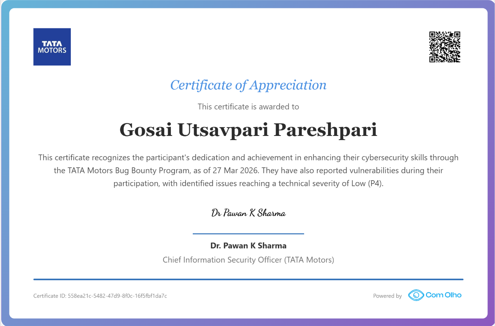
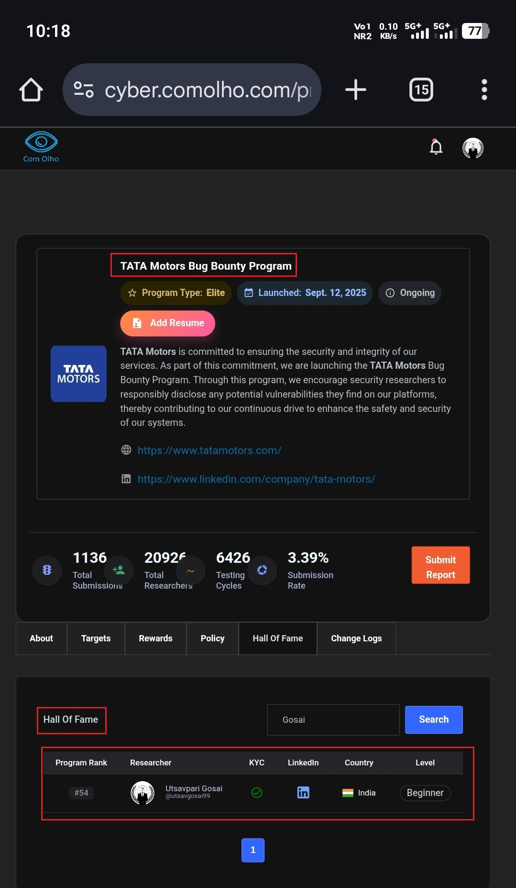

Hello Hackers! 👋
I hope you’re all doing well and continuing to secure our digital landscape. 🌐🔐
So, let’s get started with another chapter from my bug bounty journey! 🚀
🏆 Another Bug Accepted by Tata Motors
A few weeks ago, I shared an article about receiving a Certificate of Appreciation from Tata Motorswich you can read here https://mrxfact0r99.github.io/Articles/articles/index-60.html In that article, I also mentioned that I had reported several vulnerabilities, including one that was accepted with P5 severity.
However, based on the potential impact of that issue, I personally believed that it deserved P4 or even P3 severity.
But this time, I received some really exciting news! 🎉
A few days ago, I received another notification from Tata Motors via ComOlho, informing me that another vulnerability I had reported was accepted as a P4 severity issue. 🎯
Seeing another report successfully accepted was already a great feeling, but there was more good news waiting for me. 😍
🏅 Another Certificate of Appreciation
Along with the P4 acceptance, I received another Certificate of Appreciation from Tata Motors.
Receiving recognition from a large organization for responsible vulnerability disclosure is always a special moment for a security researcher. ❤️🔥
Verification Link: https://cyber.comolho.com/verify-certificate/558ea21c-5482-47d9-8f0c-16f5fbf1da7c/

This certificate became another memorable milestone in my bug bounty journey and reminded me why responsible disclosure is so important. 🔐
🏆 Hall of Fame Recognition
And the good news didn’t stop there! 🔥
I also received a Hall of Fame recognition from Tata Motors.
Hall of Fame Link: https://cyber.comolho.com/programs/bug-bounty/tata-motors/244/

It was really great to see my efforts being recognized, and I’m very happy to be listed in their Hall of Fame. 🏆🎉
For a bug hunter, recognition like this is incredibly motivating. It shows that responsible security research can make a real difference while also encouraging researchers to keep learning and improving.
💡 A Quick Tip for Bug Hunters
While testing WordPress-based websites, researchers may sometimes come across interesting publicly accessible paths and resources.
One path that can be worth checking during an authorized security assessment is:
/wp-json/wp/v2/media
Depending on the website's configuration, such locations may occasionally expose publicly accessible files or resources.
In my case, the issue was ultimately accepted as P4 severity, although I initially believed that the potential impact could justify P3 severity.
Of course, the actual severity of a vulnerability depends on the specific impact, exposure, exploitability, and the program's severity guidelines.
⚠️ Always Test Responsibly
It is extremely important to remember that security testing should only be performed on websites and assets where you have explicit authorization.
- 🔐 Test only assets that are explicitly within scope.
- 📄 Follow the bug bounty program's rules and policies.
- 🚫 Never access sensitive information that you are not authorized to access.
- ⬇️ Never download or retain sensitive files unnecessarily.
- 📢 Report security issues responsibly through the appropriate channel.
Sometimes, publicly accessible URLs can expose sensitive files or information. Responsible testing and responsible disclosure are therefore extremely important when conducting security research. 🛡️
🙌 Final Thoughts
I’m really happy to receive another Certificate of Appreciation and a Hall of Fame recognition from Tata Motors. 🏆🎉
Every accepted report is another opportunity to learn, improve my methodology, and contribute to making digital systems more secure. 🌐🔒
The P4 acceptance was especially meaningful because I had initially believed that the potential impact of the vulnerability could justify a higher severity. Nevertheless, I’m grateful for the recognition and happy that the report contributed to improving security.
Thank you for taking the time to read my experience! I hope you learned something new from it. 💻🔎
If you have any questions or queries, feel free to reach out to me through my Linktree handle. 🔗
Thank You,
MR. X FACTOR
🔗 Handles:
- Linktree: https://linktr.ee/mrxfact0r_99